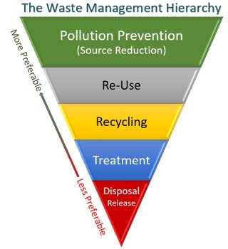

POLLUTION PREVENTION
What is Pollution Prevention (P2)?
 Pollution prevention (P2) is any practice that reduces, eliminates, or prevents pollution at its source before it is created. As shown by the EPA Waste Management Hierarchy, P2, also known as "source reduction," is fundamentally different and, where feasible, more desirable than recycling, treatment or alt="pollution">disposal. It is often more cost effective to prevent pollution from being created at its source than to pay for control, treatment and disposal of waste products. When less pollution is created, there are fewer impacts to human health and the environment.
Specific Pollution Prevention Approaches
Pollution prevention approaches can be applied to all potential and actual pollution-generating activities, including those found in the energy, agriculture, federal, consumer and industrial sectors. Prevention practices are essential for preserving wetlands, groundwater sources and other critical ecosystems - areas in which we especially want to stop pollution before it begins.
In the energy sector, pollution prevention can reduce environmental damages from extraction, processing, transport and combustion of fuels. Pollution prevention approaches include:
- increasing efficiency in energy use;
- use of environmentally benign fuel sources.
- Reducing the use of water and chemical inputs;
- Adoption of less environmentally harmful pesticides or cultivation of crop strains with natural resistance to pests; and
- Protection of sensitive areas.
- Using non-toxic or less toxic chemicals as cleaners, degreasers and other maintenance chemicals
- Modifying a production process to produce less waste.
- Implementing water and energy conservation practices
- Reusing materials such as drums and pallets rather than disposing of them as waste